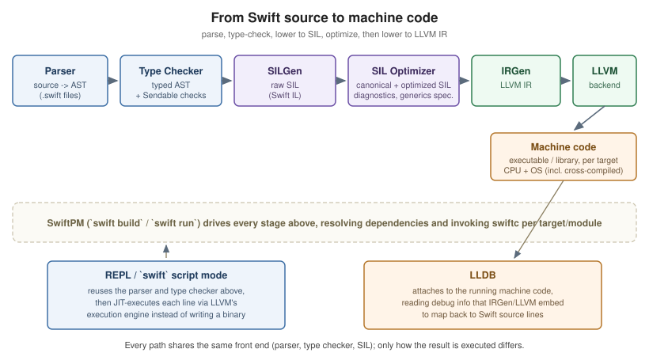

Getting Started
|
This content was generated with the assistance of AI and should be verified against the official documentation before being relied on in production. |
Swift is a general-purpose, type-safe, compiled language from Apple, designed to be safe by default, fast, and expressive. Three ideas run through the whole language:
-
Value semantics — structs, enums and collections are copied on assignment and mutation, which makes state predictable and lets the compiler reason about ownership without a garbage collector.
-
Optionals — the absence of a value (
nil) is part of a type’s spelling (Int?), not a hidden possibility every reference type carries; the compiler forces you to handle it. -
Protocols and structured concurrency — behaviour is described through protocols and protocol extensions rather than deep class hierarchies, and asynchronous code is written with
async/awaitandTasks that compose into a structured tree the compiler can check for data races.
A Short History
| Year | Milestone | What it introduced |
|---|---|---|
2014 |
Swift 1.0 announced at WWDC |
The language itself, as a safer replacement for Objective-C on Apple platforms. |
2015 |
Swift 2.2 open-sourced |
Development moves to swift.org; Linux becomes a supported platform. |
2019 |
Swift 5.0 — ABI stability |
A stable binary interface on Apple platforms; |
2021 |
Swift 5.5 — structured concurrency |
|
2024 |
Swift 6.0 — the Swift 6 language mode |
Opt-in strict concurrency checking that eliminates data races at compile time. |
2025 |
Swift 6.1—6.2 |
Approachable-concurrency refinements, |
2026 |
Swift 6.3 (6.3.2) |
Further concurrency ergonomics and standard-library additions; this section’s language baseline. |
2026 |
Swift 6.4 (current, 6.4.2) |
Further standard-library additions; features from it are flagged Swift 6.4 wherever mentioned, and its compiler builds this section’s examples. |
|
Language mode and compiler version are two different dials. The compiler version (6.3.2, say) is which
toolchain you installed. The language mode ( |
Toolchains
-
Xcode (macOS) — the primary IDE on Apple platforms; bundles a Swift toolchain, SwiftUI/UIKit previews and the full Apple SDK set. Installed from the Mac App Store or developer.apple.com.
-
Swiftly — the official toolchain-version manager (
swiftly install 6.3.2,swiftly use 6.3.2), the recommended way to install and switch Swift versions on macOS and Linux without Xcode. -
swift.org toolchains — standalone installers/tarballs for Linux (Ubuntu, Amazon Linux, other distros via Docker images) and an experimental Windows toolchain, for building and running Swift outside the Apple ecosystem entirely.
-
Visual Studio Code + the official Swift extension (built on SourceKit-LSP) — the common cross-platform editor setup, providing completion, diagnostics and debugging without Xcode.
See Swift IDEs & Tools for more on IDEs and editors.
Verify an install:
swift --version # e.g. Apple Swift version 6.4.2 (swiftlang-...)
swiftly list # every toolchain installed side by side, when using SwiftlyThe REPL, Scripts and swiftc
Running swift with no arguments starts the REPL (read-eval-print loop), useful for trying out expressions
interactively:
swift
1> let numbers = [1, 2, 3, 4, 5]
2> numbers.reduce(0, +)
$R0: Int = 15A single file runs directly as a script, with no separate compile step visible to you:
swift hello.swiftswiftc invokes the compiler explicitly to produce a binary:
swiftc hello.swift -o hello
./hello// hello.swift
print("Hello, World!")Your First Package
swift package init scaffolds a Swift Package Manager (SwiftPM) project — the standard unit of distribution and
build configuration, covered in full in Build and
Tooling:
mkdir HelloPackage && cd HelloPackage
swift package init --type executable
swift runThis produces a Package.swift manifest and a Sources/HelloPackage/HelloPackage.swift entry point:
// swift-tools-version: 6.0
import PackageDescription
let package = Package(
name: "HelloPackage",
targets: [
.executableTarget(name: "HelloPackage")
]
)The // swift-tools-version: comment pins which SwiftPM manifest API is used to parse Package.swift; it is
independent of the swiftLanguageMode setting that governs the source code inside the targets.
Playgrounds (an Xcode document type mixing Swift source with live, inline results) remain a quick way to
experiment visually on macOS, though swift run/the REPL cover the same need on any platform.

A Swift Tour, the first chapter of The Swift Programming Language, is the official condensed introduction — every construct it shows is covered here in depth, and it remains the fastest way to see the whole language in one sitting.
A First Program: The Bookshelf
Before the detailed pages, here is one complete program that touches the language’s main ideas. It is the running example of this
section in its smallest form: an enum of genres, a struct for books, a protocol with an extension, an optional rating, a throwing
method and a few collection operations. Save it as bookshelf.swift and run it with swift bookshelf.swift.
// bookshelf.swift -- a first program that touches the language's main ideas.
enum Genre: String, CaseIterable { // an enum with raw values
case fiction, history, science
}
struct Book { // a value type
let title: String
let genre: Genre
var copies: Int
var rating: Double? // optional: not every book is rated yet
}
protocol Describable { // a protocol with a default implementation
var summary: String { get }
}
extension Book: Describable {
var summary: String {
let stars = rating.map { "\($0)" } ?? "unrated"
return "\(title) [\(genre.rawValue)] x\(copies), \(stars)"
}
}
enum LendingError: Error { case outOfStock(String) }
struct Library {
private(set) var books: [Book] = []
mutating func add(_ book: Book) { books.append(book) }
func books(in genre: Genre) -> [Book] { books.filter { $0.genre == genre } }
func averageRating() -> Double? { // returns nil when nothing is rated
let rated = books.compactMap(\.rating)
return rated.isEmpty ? nil : rated.reduce(0, +) / Double(rated.count)
}
mutating func lend(_ title: String) throws {
guard let index = books.firstIndex(where: { $0.title == title }),
books[index].copies > 0 else {
throw LendingError.outOfStock(title)
}
books[index].copies -= 1
}
}
var library = Library()
library.add(Book(title: "Dune", genre: .fiction, copies: 2, rating: 4.5))
library.add(Book(title: "SPQR", genre: .history, copies: 1, rating: nil))
library.add(Book(title: "Cosmos", genre: .science, copies: 0, rating: 4.7))
for genre in Genre.allCases {
print(genre, library.books(in: genre).map(\.summary))
}
print("average rating:", library.averageRating().map { "\($0)" } ?? "none")
for title in ["Dune", "Cosmos", "Missing"] {
do {
try library.lend(title)
print("lent", title)
} catch LendingError.outOfStock(let t) {
print("cannot lend", t)
}
}
print(library.books.map { "\($0.title)=\($0.copies)" })fiction ["Dune [fiction] x2, 4.5"]
history ["SPQR [history] x1, unrated"]
science ["Cosmos [science] x0, 4.7"]
average rating: 4.6
lent Dune
cannot lend Cosmos
cannot lend Missing
["Dune=1", "SPQR=1", "Cosmos=0"]What each part shows, with a pointer to the page that explains it:
-
Genreis anenumwithStringraw values andCaseIterable, which givesallCases(Enumerations). -
Bookis astruct, a value type: copying a book copies its data, andletandvarproperties decide what can change (Structures and Classes). -
rating: Double?is an optional:nilmeans "not rated", andrating.map { ... } ?? "unrated"is how you use it without crashing (Optionals). -
Describableand theextension Book: Describablegive the type a capability after the fact (Protocols). -
private(set) var bookscan be read from outside but written only byLibraryitself, so every change goes throughaddandlend(Access Control). -
lendis a throwing method;guardunwraps and checks in one place, and the caller handlesLendingErrorin ado/catch(Error Handling). -
compactMap(\.rating),filterandreduceare the everyday collection operations (Collections and Functional Programming).
The compile and run steps themselves are the same on every platform:
Pitfalls for Newcomers
-
A script file with top-level code (statements outside any function) is fine for
swift file.swift, but a file in a package target needs a@maintype or amain.swiftfile. -
Swift prints
nilasniland an optional value asOptional(4.5)in a string interpolation of the optional itself; unwrap it first (asmapdoes above) unless you really want to see the wrapper. -
Floating-point results may print with more digits than you expect (
0.1 + 0.2); format or round when presenting numbers. -
The first build of a package downloads and compiles dependencies, which can take a while; later builds are incremental.
See Also
-
Lexical Structure and Style — comments, identifiers, literals and the API Design Guidelines this section follows.
-
Build and Tooling — SwiftPM in depth: manifests, targets, dependencies and plugins.
-
Async/Await and Tasks — structured concurrency and the Swift 6 data-race checker in depth.